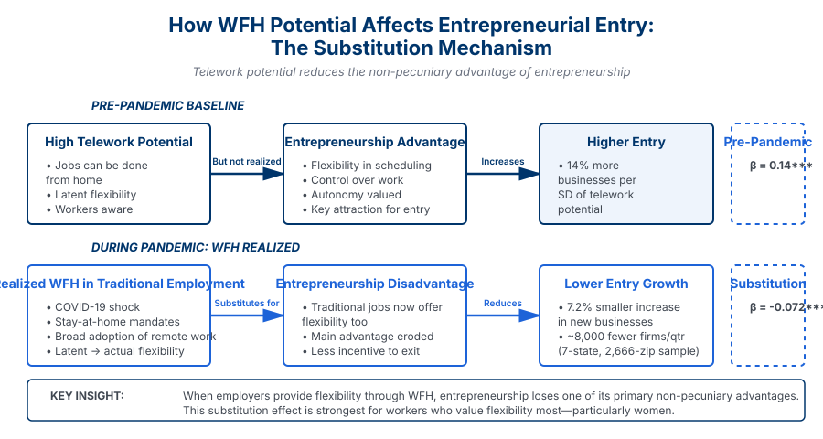

Hustling from Home? Work from Home Flexibility and Entrepreneurial Entry


Abstract
We study how the expansion of work-from-home (WFH) affects entrepreneurial entry using the COVID-19 pandemic as a natural experiment. Widespread adoption of WFH increased overall entrepreneurial entry but generated a clear substitution effect: areas with higher ex ante telework potential experienced notably smaller increases in new business registrations.
We propose and test a conceptual framework that emphasizes the substitution between employer-provided flexibility and entrepreneurship's traditional advantage in offering autonomy and flexibility. When traditional employment offers comparable flexibility through remote work, the incentive to leave for entrepreneurship in search of those non-pecuniary benefits falls. We find empirical evidence consistent with the model. Effects are larger for those primarily motivated by flexibility, such as women. Survey evidence further confirms that employer-provided flexibility reduces entrepreneurial intent. The analysis uses zip-code-level data on new business registrations from the Startup Cartography Project and measures of pre-pandemic telework potential (Dingel and Neiman 2020; Gupta et al. 2022).
Key Findings
Substitution Effect
While entrepreneurship increased overall during the pandemic, regions with greater pre-pandemic telework potential saw comparatively smaller increases in new business registrations. Where WFH was easier to implement and more likely realized, the rise in new business launches was muted—consistent with employer-provided flexibility substituting for flexibility that would otherwise have been sought through entrepreneurship.
Internet and Realized WFH
Regions with both high telework potential and better internet connectivity (FCC download speeds) saw even larger relative declines in entrepreneurial entry. A 2SLS strategy that instruments for realized WFH using pre-pandemic potential and pandemic timing confirms that areas with greater actual shifts into remote work had markedly smaller increases in new business formation.
Heterogeneity: "Double Deterrent"
The substitution effect is stronger in economically disadvantaged regions (lower pre-pandemic incomes, weaker labor growth, higher out-migration). In these areas, a one standard deviation increase in telework potential corresponds to an additional 1–4% decline in new business registrations. When both pecuniary returns and autonomy-driven motivations for entrepreneurship are weak, flexibility in traditional employment more strongly deters entry.
Gender-Differential Effects
In states where founder gender can be inferred, high–WFH-potential areas saw significantly larger declines in women-led business formation than in men-led. The gap is not present pre-pandemic, pointing to the pandemic-era WFH shift as the driver. Women disproportionately value flexibility; once traditional employment offers it via WFH, entrepreneurship's advantage as a source of flexibility diminishes.
Survey Evidence
Survey evidence confirms that employer-provided flexibility reduces entrepreneurial intent, consistent with the substitution mechanism.
Research Contribution
We provide evidence that employer-provided WFH flexibility substitutes for one of the main non-pecuniary benefits of entrepreneurship—autonomy and control over work—thereby reducing entrepreneurial entry where WFH is most feasible. The paper speaks to the broad spectrum of U.S. entrepreneurial activity (Startup Cartography Project), which is dominated by small, traditional businesses often motivated by flexibility rather than high growth. For such entrants, expanded WFH in traditional jobs can suppress new business formation; for more growth-oriented or innovation-driven ventures, WFH may instead act as a safety net that enables experimentation while employed. We also document that the substitution effect is particularly pronounced for women and in regions that could benefit most from new business creation, with implications for policy and for the long-run effects of remote work on entrepreneurial dynamism.